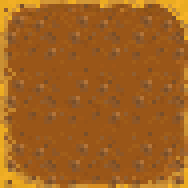
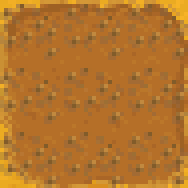
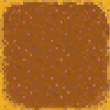
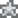

Gübre
- Ayrıca bakınız: Ekin Büyüme Takvimleri
Gübre Ekinler ve ağaç büyümesini desteklemek ve Çiftçilik 'e yardımcı olmak için kullanılır. Üç tür mahsul gübresi vardır: Gübre, Toprak Tutma ve Hızla Büyüme. Ve bir tür ağaç gübresi var: Ağaç Gübresi. Bazı gübreler, ekilen tohum filizlenmeden önce işlenmiş toprağa konularak kullanılır; bitki büyümesi sırasında herhangi bir zamanda diğer gübre kullanılabilir. Mahsul gübreleri, Yabani Tohumlar 'den yetiştirilen mahsuller de dahil olmak üzere tüm mahsulleri etkiler.Tüm mahsul gübrelerinin üç katı vardır. Ağaç Gübresi tek kademelidir.
Mekanik
Tüm gübre hazırlanmış olabilir. Birinci kademe gübreler için tarifler, gerekli Çiftçilik veya Toplayıcı becerisine ulaşıldığında öğrenilir. İkinci aşama tarifleri gerekli Çiftçilik becerisine ulaşıldığında öğrenilir.üçüncü kademe tarifler Zencefil Adası'ndan satın alınabilir. Birinci ve ikinci kademe Ekin gübreleri ayrıca yıl boyunca Pierre'in Bakkalı 'dan veya belirli haftanın günleri Vaha' dan satın alınabilir.
Gübre her mevsim toprakta kalır. Mevsim değiştiğinde gübre normal olarak kaybolur.Bununla birlikte, gübrenin toprakta kalacağı iki istisna vardır.
- Çok mevsimlik bir ekinler ( yani , Eski Meyve, Kahve Çekirdeği, Mısır, Ayçiçeği veya Buğday ise döllenmiş kiremit içine ekilir ve yeni sezon mahsulün büyüdüğü bir mevsimdir, gübre kalacaktır.
- Normal büyüme mevsiminden önce seraya ekilen herhangi bir ürün, eğer yeni mevsim normal olarak yetiştiği bir mevsimse, gübresini koruyacaktır.
Mahsul kalitesinin ekim zamanında değil, hasat zamanında belirlendiğini unutmayın, dolayısıyla Sera'da normal büyüme mevsimi dışında olgunlaşacak mahsuller üzerinde kullanılan gübre hasattan önce kaybolacak ve hiçbir etkisi olmayacaktır.
Bir mahsulü Araç ile Kazma gibi bir şeyle kaldırmak, gübreyi kaldırmaz. Gübreyi çıkarmak için aletle ikinci bir vuruş yapılması gerekir.
Toprak kiremit başına yalnızca bir tür gübre kullanılabilir.
Gübre Çeşitleri
| Görsel | İsim | Açıklama | Ne Zaman Kullanılmalı | Pierre'in | Vaha | Satış fiyatı | İçindekiler | # Zanaat Başına Üretilmiştir | Tarif Kaynağı |
|---|---|---|---|---|---|---|---|---|---|
| Sıradan Gübre | Toprağın kalitesini ve kaliteli ekin yetişme olasılığını birazcık arttırır. Sürülmüş toprağa karıştırılır. | Tohum filizlenmeden önce | (Bahar 15, Yıl 1+) |
1 | |||||
| Kaliteli Gübre | Toprağın kalitesini ve kaliteli ekin yetişme olasılığını arttırır. Sürülmüş toprağa karıştırılır. | Tohum filizlenmeden önce | (Yıl 2+) |
1 | |||||
| Üstün Gübre | Toprağın kalitesini ve kaliteli ekin yetişme olasılığını büyük oranda arttırır. Sürülmüş toprağa karıştırılır. | Ekimden önce veya sonra | 5 | Qi'nin Ceviz Odası | |||||
| Sıradan Tutucu Toprak | Az da olsa, bu toprağın geceleyin ıslak kalma olasılığı vardır. Sürülmüş toprağa karıştırılır. | Ekimden önce veya sonra | (Bahar 15, Yıl 1+) |
1 | |||||
| Kaliteli Tutucu Toprak | Bu toprağın geceleyin ıslak kalma olasılığı çoktur. Sürülmüş toprağa karıştırılır. | Ekimden önce veya sonra | (sadece cumartesi) |
2 | |||||
| Üstün Tutucu Toprak | Bu toprağın geceleyin ıslak kalma olasılığı %100'dür. Sürülmüş toprağa karıştırılır. | Ekimden önce veya sonra | 1 | ||||||
| Hızlı-Ek | Ekin oluşumunu kamçılar. Yetişme hızını en az %10 arttırır. Sürülmüş toprağa karıştırılır. Not: Çok hasatlı ürünlerde hasatlar arasındaki süreyi kısaltmaz. |
Ekimden önce veya sonra | (Bahar 15, Yıl 1+) |
5 | |||||
| Üstün Hızlı-Ek | Ekin oluşumunu kamçılar. Yetişme hızını en az %25 arttırır. Sürülmüş toprağa karıştırılır. Not: Çok hasatlı ürünlerde hasatlar arasındaki süreyi kısaltmaz. |
Ekimden önce veya sonra | (Year 2+) |
(sadece perşembe) |
5 | ||||
| Aşırı Hızlı-Ek | Ekin oluşumunu aşırı derecede kamçılar. Yetişme hızını en az %33 arttırır. Sürülmüş toprağa karıştırılır. Not: Çok hasatlı ürünlerde hasatlar arasındaki süreyi kısaltmaz. |
Ekimden önce veya sonra | 1 | Qi's Walnut Room for | |||||
| Ağaç Gübresi | Kış aylarında bile olgunlaşma sürecini hızlandırmak için yabani ağaçların köküne serpilir. Meyve ağaçlarında işe yaramaz. | Ağaç tohumları ve fidanları diktikten sonra | Yok | 1 |
Ekin Kalite Oranları
Kalitenin ekim sırasında değil, hasat sırasında belirlendiğini unutmayın. Hasat sırasında birden fazla ürün üreten mahsuller için (yani, Kahve Çekirdeği, Yaban Mersini, Kızılcık), Temel ve Kalite gübreler yalnızca üretilen ilk mahsulü etkiler.
Formülün tamamı için lütfen Çiftçilik'e bakın.
Normal toprak
| Çiftçilik Seviyesi | % Düzenli kalite | % Gümüş kalitesi | % Altın kalitesi | Ortalama fiyat |
|---|---|---|---|---|
| 0 | 97% | 2% | 1% | 1.01 |
| 1 | 91% | 6% | 3% | 1.03 |
| 2 | 85% | 10% | 5% | 1.05 |
| 3 | 80% | 13% | 7% | 1.07 |
| 4 | 75% | 16% | 9% | 1.09 |
| 5 | 69% | 20% | 11% | 1.10 |
| 6 | 64% | 23% | 13% | 1.12 |
| 7 | 60% | 25% | 15% | 1.14 |
| 8 | 55% | 28% | 17% | 1.16 |
| 9 | 50% | 31% | 19% | 1.17 |
| 10 | 46% | 33% | 21% | 1.19 |
| 11 | 42% | 35% | 23% | 1.20 |
| 12 | 38% | 37% | 25% | 1.22 |
| 13 | 34% | 39% | 27% | 1.23 |
| 14 | 30% | 41% | 29% | 1.25 |
Sıradan Gübreli Toprak
| Tarım seviyesi | % Düzenli kalite | % Gümüş Kalitesi | % Altın Kalitesi | Ortalama fiyat |
|---|---|---|---|---|
| 0 | 88% | 8% | 4% | 1.04 |
| 1 | 77% | 15% | 8% | 1.08 |
| 2 | 68% | 20% | 12% | 1.11 |
| 3 | 59% | 26% | 15% | 1.14 |
| 4 | 50% | 31% | 19% | 1.17 |
| 5 | 42% | 35% | 23% | 1.20 |
| 6 | 35% | 39% | 26% | 1.23 |
| 7 | 28% | 42% | 30% | 1.25 |
| 8 | 22% | 44% | 34% | 1.28 |
| 9 | 16% | 47% | 37% | 1.30 |
| 10 | 15% | 44% | 41% | 1.32 |
| 11 | 14% | 41% | 45% | 1.33 |
| 12 | 13% | 39% | 48% | 1.34 |
| 13 | 12% | 36% | 52% | 1.35 |
| 14 | 11% | 33% | 56% | 1.36 |
Soil with Quality Fertilizer
| Çiftçilik Seviyesi | % Düzenli kalite | % Gümüş kalitesi | % Altın kalitesi | Ortalama fiyat |
|---|---|---|---|---|
| 0 | 78% | 14% | 8% | 1.07 |
| 1 | 64% | 23% | 13% | 1.12 |
| 2 | 52% | 30% | 18% | 1.17 |
| 3 | 40% | 36% | 24% | 1.21 |
| 4 | 30% | 41% | 29% | 1.25 |
| 5 | 21% | 45% | 34% | 1.28 |
| 6 | 15% | 45% | 40% | 1.31 |
| 7 | 14% | 41% | 45% | 1.33 |
| 8 | 13% | 37% | 50% | 1.34 |
| 9 | 11% | 33% | 56% | 1.36 |
| 10 | 10% | 29% | 61% | 1.38 |
| 11 | 9% | 25% | 66% | 1.39 |
| 12 | 7% | 21% | 72% | 1.41 |
| 13 | 6% | 17% | 77% | 1.43 |
| 14 | 4% | 13% | 82% | 1.44 |
Soil with Deluxe Fertilizer
| Çiftçilik Seviyesi | % Düzenli kalite | % Gümüş kalitesi | % Altın kalitesi | % İridyum Kalitesi | Ortalama fiyat |
|---|---|---|---|---|---|
| 0 | 66% | 19% | 10% | 6% | 1.15 |
| 1 | 48% | 27% | 16% | 9% | 1.24 |
| 2 | 33% | 33% | 22% | 13% | 1.32 |
| 3 | 21% | 37% | 27% | 16% | 1.39 |
| 4 | 12% | 37% | 31% | 20% | 1.44 |
| 5 | 10% | 31% | 35% | 23% | 1.49 |
| 6 | 9% | 26% | 39% | 27% | 1.52 |
| 7 | 7% | 21% | 42% | 30% | 1.56 |
| 8 | 5% | 16% | 45% | 34% | 1.60 |
| 9 | 4% | 12% | 47% | 37% | 1.63 |
| 10 | 3% | 8% | 48% | 41% | 1.67 |
| 11 | 2% | 5% | 49% | 44% | 1.70 |
| 12 | 1% | 2% | 50% | 48% | 1.73 |
| 13 | 0% | 0% | 49% | 51% | 1.76 |
| 14 | 0% | 0% | 46% | 55% | 1.77 |
Dış görünüş
İşlenmiş toprakta kullanıldığında her gübre türü benzersiz bir görünüme sahip olur ve belirli bir döşemede hangi tür gübrenin kullanıldığını görmenize olanak tanır.
| İsim | Sulanmamış | Sulanmış |
|---|---|---|
Sıradan Gübre |

|

|
Kaliteli Gübre |

|

|
Üstün Gübre |

|

|
Sıradan Tutucu Toprak |

|
 |
Kaliteli Tutucu Toprak |
 | 
|
Üstün Tutucu Toprak |

|

|
Hızlı-Ek |

|

|
Üstün Hızlı-Ek |

|
 |
Aşırı Hızlı-Ek |

|

|
Gübre Maliyeti
- Ayrıca bakınız: Balığınızı Ne Zaman Kaliteli Gübreye Dönüştürmelisiniz
Kaliteli Gübre haricinde, Gübre üretmek her zaman satın almaktan daha ucuzdur.
Her Hızlı-Ek veya Üstün Hızlı-Ek ürettiğinizde, 5 gübre alırsınız. Her Kaliteli Tutucu Toprak ürettiğinizde 2 gübre alırsınız, ancak yalnızca birini üretmek yine de onu satın almaktan daha ucuz olacaktır.
Aşağıdaki tablolar, Hızlı-Ek veya Üstün Hızlı-Ek üretmenin maliyetini, bunları Vaha veya Pierre'dan satın alma maliyetiyle karşılaştırmaktadır. Üretimin maliyeti, kurucu bileşenlerin satış fiyatıdır.
5 Tane
|
| Üretim | |||
|---|---|---|---|
| Mesleği Olmadan |
Normal | ||
|  Gümüş | |||
| Altın | |||
Mesleği |
Normal | ||
| Gümüş | |||
| Altın | |||
5 Tane  Üstün Hızlı-Ek'in Maliyeti
Üstün Hızlı-Ek'in Maliyeti
| Üretim | ||||
|---|---|---|---|---|
| Mesleği Olmadan |
Normal | |||
| Gümüş | ||||
| Altın | ||||
Mesleği |
Normal | |||
| Gümüş | ||||
| Altın | ||||
Not: Pekmez Uzmanı Mesleğini seçtiyseniz teknik olarak iridyum kalitesinde deniz tarağı/mercan bulmanız mümkün değildir.
Hatalar
- Saksı'da kullanılan gübre, özellikle Yabani Tohumlar dışında tohumlar kullanıldığında, mahsul hasat edilirken kaybolacaktır.
Geçmiş
- 1.4: Zanaat başına eşya sayısı artık eşyalar envantere girmeden önce işçilik menüsünde gösteriliyor. Speed-Gro ve Deluxe Speed-Gro artık ekimden sonra kullanıldığında bir etkiye sahip.
- 1.5: Üçüncü kademe gübreler eklendi